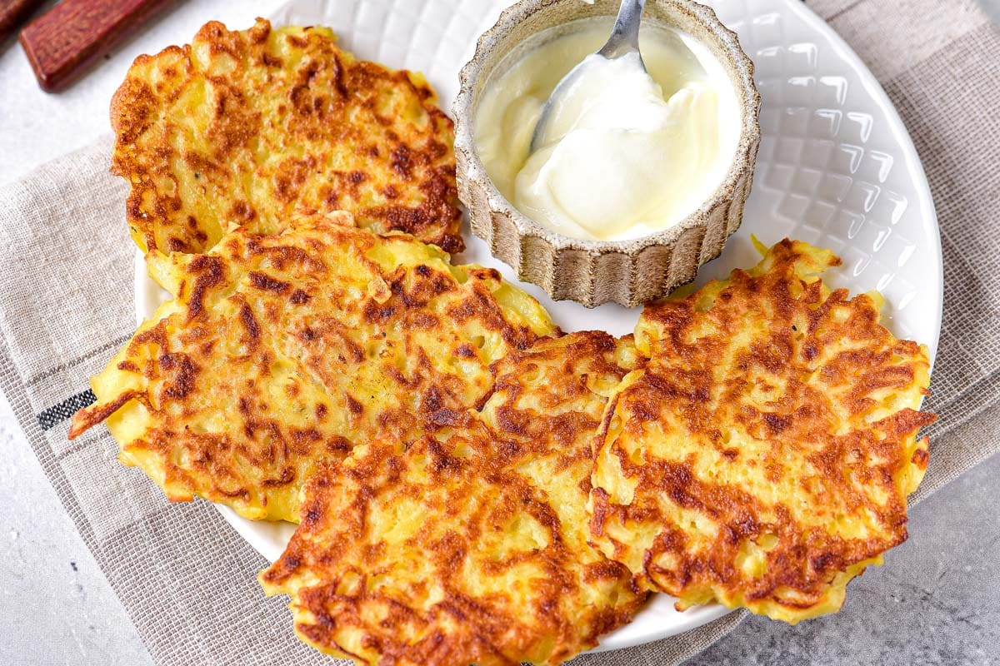

Deruny

Description
Kremzlyky, tertyukhy, rysylovanyky, terchanyky, potato pancakes or simply deruny are cooked under different names in the regions of Ukraine. This dish is especially popular in the northern and eastern regions of the country. The very name "deruny" comes from the method of cooking: its main and constant ingredient is grated, or, as they say, "derty" potatoes. Other components may vary according to the traditions of the region or individual family. In particular, onions, garlic, flour, oil, and сan be added to the dish.
Traditionally, potato pancakes were cooked on Sundays and eaten for breakfast or dinner. They were often served at a festive table on holidays such as the Annunciation.
Ingredients
- 5 large potatoes;
- onion — 1 piece;
- egg — 1 piece;
- flour — 1 tablespoon;
- salt, pepper;
- sunflower oil — 70 ml (for frying);
- sour cream — 100 grams (for serving).
Steps
- Deruny making always starts with rubbing the potatoes. This stage is very responsible, because the taste, color and structure of potato pancakes depend on the characteristics of the grater. It is believed that the smaller the grater, the tastier the dish will be. Extra liquid should be drained from the grated potatoes. To do this, lightly squeeze it with your hands or put it on a sieve.
- Now add grated onion, egg, flour, salt and pepper to the potato mass. Mix all ingredients until smooth. This stock should resemble thick sour cream in density.
- Heat the sunflower oil in a frying pan. Spoon several pancakes so that each of them is up to 5 millimeters thick. Fry the pancakes on both sides until golden crust.
- In some households, a slightly different way of making potato pancakes is considered traditional: they are first fried in a pan and then baked in the oven. This method of cooking is used when making thicker potato pancakes, or add stuffing to them.
- Serve deruny with sour cream, cracklings, cheese or fermented milk called ryazhenka. A sauce of sour cream and toasted mushrooms, onions and flour has always been popular among housewives. In the western regions, the sauce is made from white mushrooms making the dish fragrant.